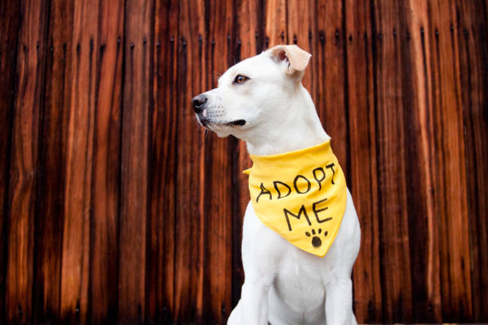

Animal Rescue
At SOS, Our mission is to provide a safe haven for abandoned, abused, and neglected animals, giving them a second chance at life. With the support of our dedicated team and caring community, we work tirelessly to rehabilitate and rehome these animals, ensuring they find loving forever homes.
More
Animal Healthcare
We prioritize the health and well-being of animals. Our dedicated team of veterinarians and caregivers are committed to providing top-notch healthcare services to all creatures, great and small. Whether it's preventive care, medical treatment, or specialized support, we are here to ensure that every animal receives the best possible care.
More
Animal Adoption
we believe that every animal deserves a loving home. Our adoption program connects caring individuals and families with wonderful animals in need of forever homes. Through our careful matchmaking process, we strive to find the perfect companions for adopters while giving animals a second chance at a joyful life.
MoreDonation
We understand that supporting animal welfare is a collective effort. Your generosity can make a significant impact. Your food donations help us nourish and care for the animals in our shelter,Additionally financial contributions go a long way in covering medical expenses, shelter maintenance, and expanding our reach to rescue even more animals in need. Every donation, whether in the form of food or funds, is a lifeline for the animals we serve. Join us in making a positive difference in their lives today.
More